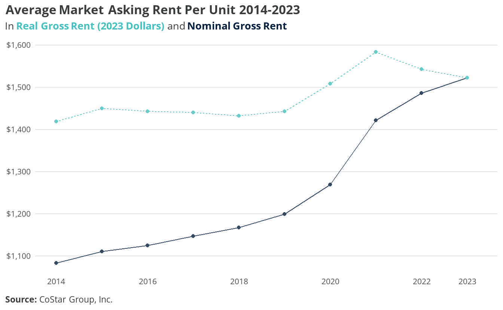
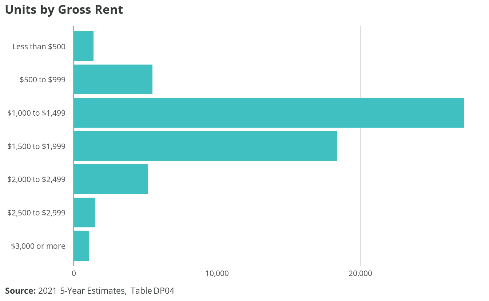
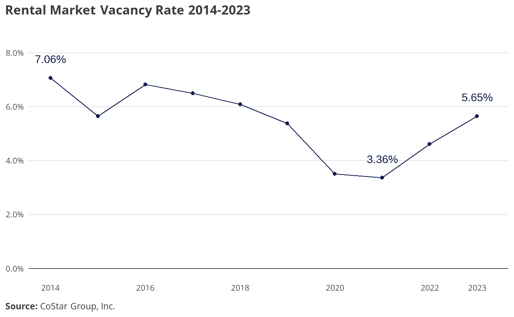
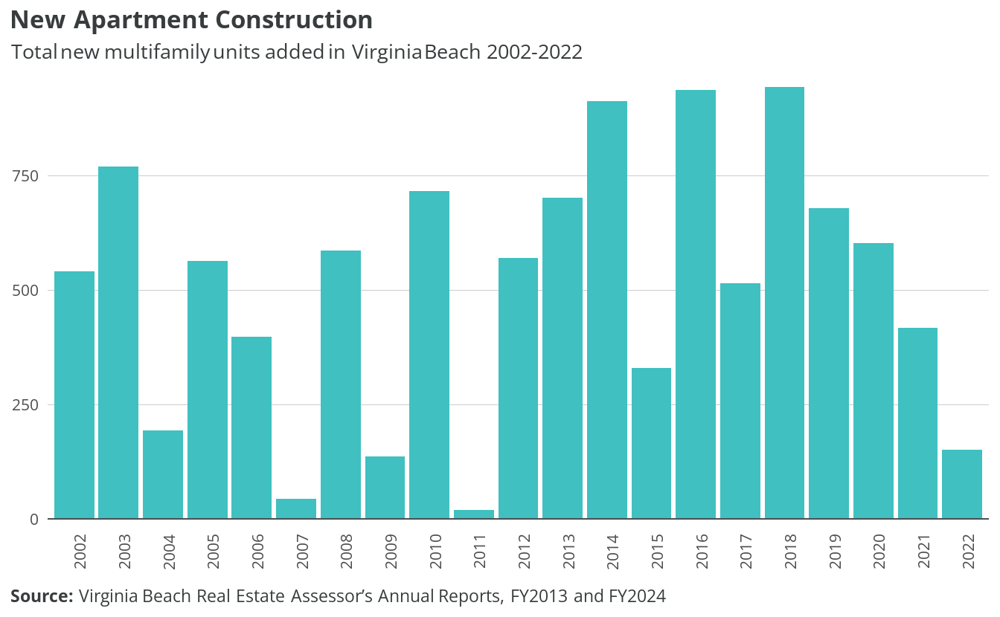
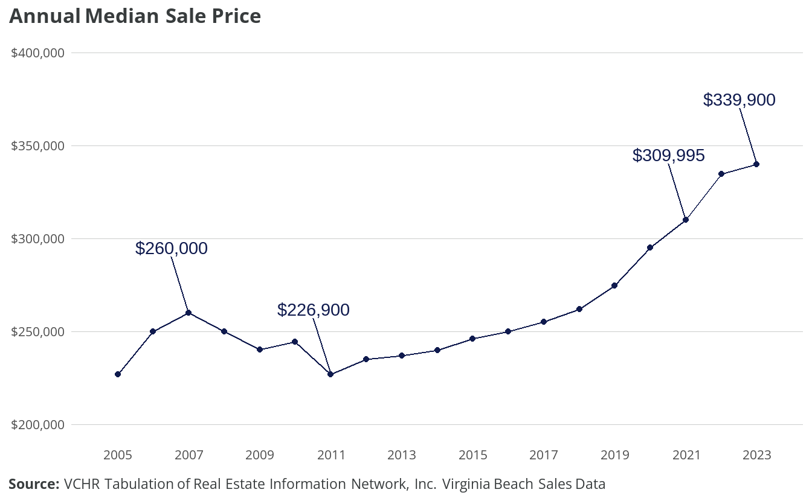
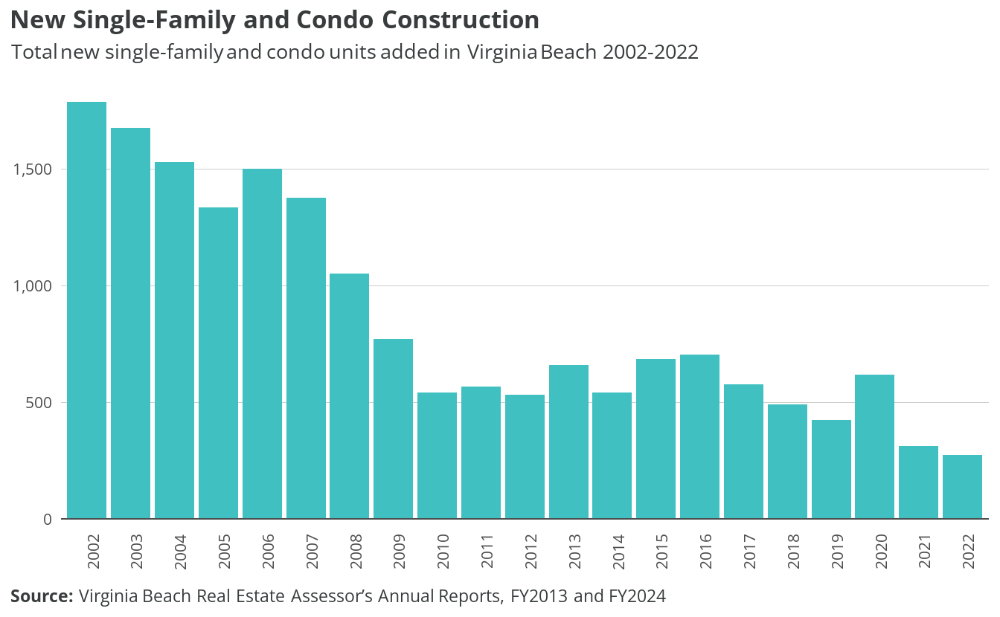

4 Market dynamics
4.1 Rental
There are approximately 66,302 rental units in Virginia Beach: 62,048 are occupied, 957 are rented but not yet occupied, and 3,297 are vacant for rent. The rental market vacancy rate is 4.97%. Although rental vacancy rates suggest that this quantity of rental housing is adequate, most units have rents close to the median, which is unaffordable for many households and may neglect the preferences of higher-income renters. To promote market health and diversity, the city should add affordable units dedicated to lower-income households as well as units responding to the preferences for higher-end rental products.
While over half of Virginia Beach housing units are single-family detached, and another one-fifth are single-family attached, a majority of rental units are in multifamily structures. There are approximately 19,819 rental units in small multifamily structures (2-9 units) and 16,928 rental units in large multifamily structures (10 or more units), together making up nearly 60% of rental units. Single-family detached and attached each make up around one-fifth of rental units. While nearly 90% of single-family detached and over 60% of single-family attached units are owned, less than 15% of units in multifamily structures are owned.

Figure 4.2 compares median gross rent to median gross rent adjusted for inflation (in 2021 dollars) from 2014-2021. Median nominal gross rent has grown steadily, from $1,203 in 2014 to $1,431 in 2021 — an 18% increase over eight years; however, inflation-adjusted rent shows a 6% reduction.
Rent estimates in ACS data used here have two important features: first, the figures lag at least one year actual market conditions due to the time required to complete and analyze survey responses; second, they include all housing types, from multifamily apartments to single-family rentals. Furthermore, the annual values for 5-year estimates reflect a rolling average from that period — not a specific figure for that year.
Real versus nominal rents
While nominal rents show the actual values from that year, adjusting for inflation produces real rents. Both measures are important because they reflect different experiences in the economy.
Households whose incomes keep up with inflation have stable purchasing power over time and may feel their position improving. Households whose wages are less responsive to inflation struggle to keep up with the rapidly increasing nominal rent. Lower-wage workers often do not receive cost-of-living adjustments or considerations as often as higher-wage earners for whom companies must compete.
Focus group attendees cited rapidly increasing or severe rent hikes experienced by clients with low incomes. They interpreted these increases as efforts to effectively evict residents with low or fixed incomes in favor of households who can afford higher rents.
CoStar data can be used to supplement ACS rent estimates because its database includes almost all multifamily properties, and is updated continuously. However, CoStar almost exclusively tracks professionally-managed rental properties (i.e. multifamily apartments and some townhome/single-family homes), which excludes many single-family rentals operated by small landlords.1
Figure 4.3 shows the average nominal and inflation-adjusted asking rents for Virginia Beach from 2014 through 2023. In contrast to gross rent, these asking rents do not include utilities. Also, unlike the ACS estimates, these data do show a real increase — up 7.3% to $1,522. However, real rents actually peaked at $1,583 in 2021, and slightly declined to 2023. This could reflect a backlog of supply coming online after initial delays created by the COVID-19 pandemic.

The median gross rent from ACS estimates, which includes utilities, is $1,433, and the median contract rent is $1,260. A large majority of rental units in Virginia Beach have a gross rent of between $1,000 and $2,000. Over 45% of units rent for between $1,000 and $1,499, while 31% rent for between $1,500 and $1,999.

Tabulation of ACS data shows a rental market vacancy rate of 4.97% in 2021. This represents a small decline from the 2014 market vacancy rate of 5.33% but not a statistically significant change.2 The market vacancy rate is calculated from vacant rental units listed for rent, as a percentage of all rental housing units.
CoStar data, however, shows a higher vacancy rate of 7.06% in 2014. The rate declined significantly during the pandemic, reaching a low of 3.36% in 2021, reflecting a significant shift in supply and demand. Since then, vacancy improved to 5.65% for 2023.

Vacancy rates from both ACS data and CoStar data suggest that, as of today, the city has a healthy quantity of rental units. Still, units should be added to keep up with continued demand.
Housing submarkets
Housing markets have been theorized as segmented markets, meaning a region’s housing market is made up of overlapping submarkets distinguished by price, location, and other qualitative differences. When a tenant’s apartment search yields many costly but few affordable units, it can lead to the perception that the rental market is tighter on the lower end.
PUMS data partially validates this perception — with the important caveat that the small sample size of vacant for-rent units in the PUMS yields lower-confidence estimates. The market vacancy rate among units renting below the median rent level is 4.5%, while market vacancy among above-median units is 5.8%. These lower-confidence findings show that among the bottom half of rental units by price, demand is higher in relation to supply.
Construction of new apartments has been steadily decreasing since 2018, and although market vacancy does not recommend a substantial reversal of this trend, focus group participants discussed how the competitive rental market increasingly excludes certain households. Higher-income households are often advantaged in the market. Focus group participants recounted practices that prioritize higher-income households and exclude lower-income households, such as requiring three months’ rent as a deposit and refusing voucher holders or other types of housing assistance.
In addition to exposing possible illegal discrimination, these examples are evidence of a tightening market where renters must compete for units rather than landlords competing for renters. Since focus group participants observed the exclusion of families, seniors, and households with low incomes, prioritizing the development of units for these groups could promote market health in addition to addressing a housing gap. More information on rental housing gaps is provided in Chapter 5.

4.2 Homeownership
The Virginia Beach homeownership market has attracted a healthy demand, following the Great Recession and a period of stagnant prices and slow pace that lasted until 2016. Median price grew 8% over 2005-2015, which includes the ups and downs of the housing “bubble” period, the Great Recession, federal tax credit support for first-time homebuyers (2009)3, decline following the removal of those tax credits (2010-2011), and the initiation of unsupported recovery. From 2011-2015, Virginia Beach lagged behind the state in price recovery from the recession, and stagnant demand was associated with less-than-adequate investments in the city’s housing stock.

Median sale price grew 36% from 2015-2022, reflecting increased demand that has balanced the market. Days on the market (DOM), the time it takes for a home to sell once it’s listed, captures both supply and demand dynamics and is a good indicator of market health.
From a community perspective, a market is considered healthy when homes are appreciating enough for owners to recover investments in maintenance and periodic upgrades, as well as build equity required to meet their future housing needs. A healthy market is also well paced, giving sellers confidence they can sell their home when they need to and giving buyers enough time to make good decisions by visiting homes and conducting home inspections upon making an offer. Median DOM between 30 and 60 days is generally considered balanced.
Markets that are too fast paced disadvantage first-time homebuyers and buyers who need unconventional financing such as VA or FHA loans. Markets that are too slow paced introduce uncertainty for owners and, when coupled with slow appreciation, discourage investment. Median DOM reached 40 days in 2022, signaling supply and demand balance.
Despite DOM indicating market health, focus group participants recounted evidence of continued tightening, such as multiple offers over asking price, especially around the median price. They also described increased investor interest, which can have a variety of market implications and is related to demand for rental housing in addition to anticipated price appreciation in the for-sale market.
Virginia Beach will need to continue to add new housing units to meet demand and keep the market balanced. Production of single-family and condo units has largely slowed year-over-year since 2016, which likely supported home appreciation and balancing of supply and demand. Though the city must continue adding units to maintain market health, adding too many units could reverse positive market trends.
Market health and moderate levels of demand create an opportunity for the City to set housing goals and prioritize housing needs of existing residents and workers, which are discussed further in the following sections. Furthermore, creating housing that meets the needs of those who are being excluded from the for-sale market has the potential to relieve hardship related to intense competition in the middle and low end of the market without negatively impacting needed home appreciation.

4.3 Vacant housing
There are approximately 12,141 vacant housing units in Virginia Beach. Approximately 3,297 are vacant for rent and 1,353 are vacant for sale, while 1,578 units have been rented or sold but not yet occupied. Approximately 2,891 vacant units, about 1.53% of total units, are vacant for seasonal, recreational, or occasional use. Approximately 3,022 units, about 1.6% of total housing units, are vacant for other reasons. See Figure 4.10 for vacant housing units by status.
Vacant units in the "other" category — generally interpreted as long-term vacancy — are unoccupied for one of the following reasons:
- Unit is foreclosed or held as part of a legal proceeding or dispute such as divorce or estate settlement
- Unit is undergoing, or in need of, repair or renovation
- Unit is being prepared for rent or sale but not yet on the market
- Unit is uninhabited for personal or family reasons, such as staying with family members or relocation to a nursing facility
- Unit is uninhabited due to the occupant’s extended absence, such as a work assignment, military deployment, or incarceration
- Unit is presently unoccupied and designated as specific use housing, such as worker or student dormitories, model units, and church-owned units
- Unit is abandoned (does not include units that are dilapidated or uninhabitable)
- Unit is vacant for a reason unknown by the survey respondent or field representative.4
Estimates for "other" vacant units by detailed reason are not available at the county/city level, and estimates at the MSA and even the state level can be unreliable due to high margins of error relative to sample sizes. Finally, the estimate of vacant units does not include housing units that are exposed to the elements or otherwise uninhabitable.
As of Janaury 2024, CoStar tracks a total inventory of 42,703 rental units in Virginia Beach. Only 1,020 (2.4%) of these are townhomes or single-family homes. This is also a very small amount compared to the 24,551 estimated detached and attached single-family homes occupied by renters shown in Figure 4.1.↩︎
Source: ACS Published Tables, 2021 5-year, B25004.↩︎
The Housing Economic Recovery Act of 2008 established a $7,500 tax credit that is similar to a no-interest loan and must be repaid in 15 equal, annual installments beginning in 2010. For homes purchased in 2009, the credit does not have to be paid back unless the home ceases to be the taxpayer’s main residence within a three-year period following the purchase. https://www.irs.gov/taxtopics/tc611↩︎
See https://www.census.gov/housing/hvs/definitions.pdf↩︎